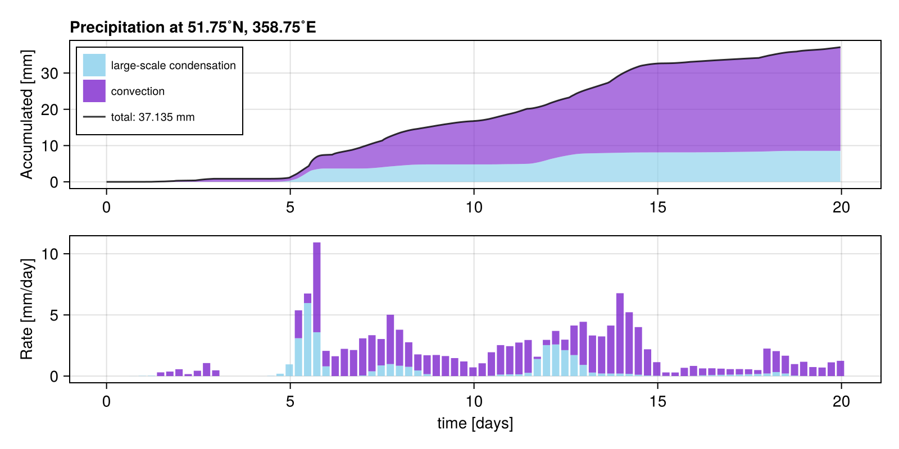
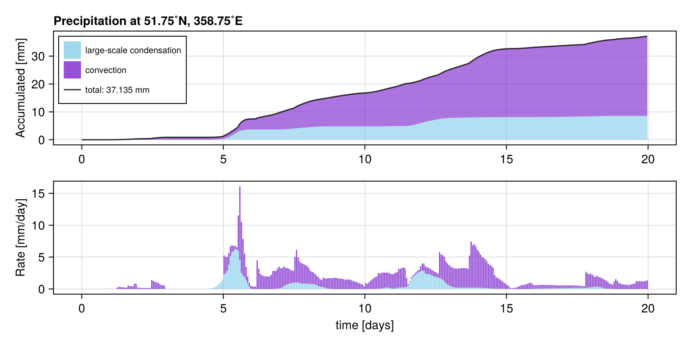
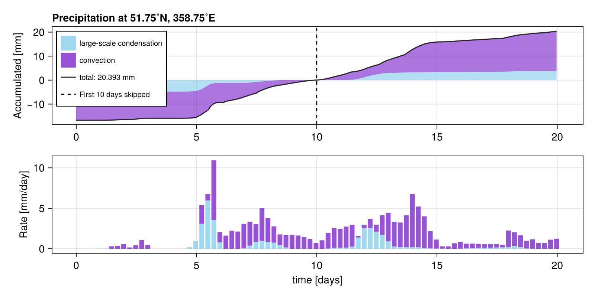
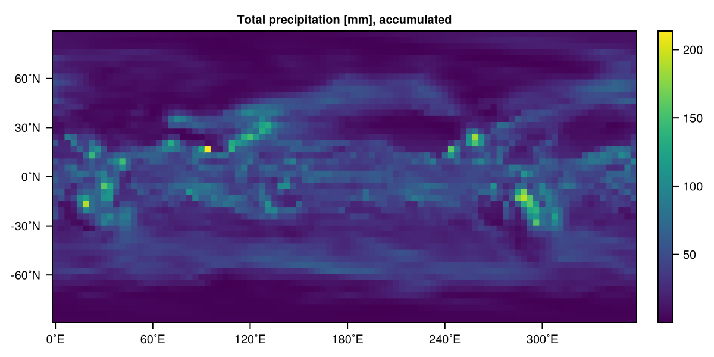

RainGauge
RainMaker.jl exports the callback RainGauge, a rain gauge that you can place inside a SpeedyWeather simulation to measures precipitation at a given location. The following explains how to use this RainGauge callback.
With a SpectralGrid from SpeedyWeather.jl (see here) you can create RainGauge (it needs to know the spectral grid to interpolate from gridded fields to a given location). In most cases you will probably want to specify the rain gauge's location with lond (0...360˚E, -180...180˚E also work) and latd (-90...90˚N)`
using SpeedyWeather, RainMaker
spectral_grid = SpectralGrid() # default resolution
rain_gauge = RainGauge(spectral_grid, lond=358.75, latd=51.75)RainGauge{Float32, AnvilInterpolator{Float32, SpeedyWeather.RingGrids.GridGeometry{OctahedralGaussianGrid{SpeedyWeather.Architectures.CPU{KernelAbstractions.CPU}, Vector{UnitRange{Int64}}, Vector{Int64}}, Vector{Float64}, Vector{Int64}}, SpeedyWeather.RingGrids.AnvilLocator{Float32, Vector{Float32}, Vector{Int64}}}} <: AbstractCallback
├ lond::Float64 = 358.75˚E
├ latd::Float64 = 51.75˚N
├ measurement_counter:Int = 0 (uninitialized)
├ tstart::DateTime = 2000-01-01T00:00:00
├ Δt::Second 1800 seconds
├ max_measurements::Int = 100000 (measuring for up to ~5.7 years, 0% recorded)
├ accumulated_rain_large_scale::Vector{Float32}, maximum: 0.0 mm
├ accumulated_rain_convection::Vector{Float32}, maximum: 0.0 mm
└ accumulated total precipitation: 0.000 mm(also see ?RainGauge for more information). The measurement_counter starts at 0 and just counts up the number of measurements the rain gauge has made, one per timestep – zero also means that the gauge is not initialized. In order to reconstruct the time axis the fields tstart and Δt are used but they will be automatically set when initialized given the time step in the model. At any time you can always reset!(rain_gauge) in order to reset the counter, time and all rainfall measurements. But a RainGauge is also mutable, meaning you can do this by hand too, e.g. rain_gauge.accumulated_rain_large_scale .= 0.
RainGauge has two vectors accumulated_rain_large_scale and accumulated_rain_convection where every entry is one measurement of the given precipitation type at the specified location. One measurement is taken after every time step of the model simulation. In order to preallocate these vectors we use max_measurements as length, meaning those are the maximum number of measurements that will be taken. An info is thrown when this point is reached and also an instance of RainGauge printed to the terminal shows you how many years of measurements you can take and how much of that measurement "memory" is already used, see above. If you want to measure for longer periods you may need to increase max_measurements by setting it as a keyword argument, e.g. RainGauge(spectral_grid, max_measurements=1_000_000)
Adding RainGauge as callback
The RainGauge is implemented as a <: SpeedyWeather.AbstractCallback (<: means "subtype of"). A Callback is an object (technically a struct introducing a new type that belongs to the supertype AbstractCallback) with methods defined that are executed after every time step of the model. A callback therefore allows you to inject any piece of code into a simulation. Many callbacks are "diagnostic" meaning they just read out variables but you could also define "intrusive" callbacks that change the model or the simulation while it is running (not covered here but see Intrusive callbacks).
A RainGauge can be added to a model with add!
model = PrimitiveWetModel(spectral_grid)
add!(model, rain_gauge)Note that you can create many different (or same) RainGauges and add them all to your model in the same way. This way you can place several "weather stations" across the globe and measure simultaneously. Note that you will need to create several independent RainGauges for that, adding the same RainGauge several times to the model is unlikely what you will want to do (it will measure several times the same precipitation after each time step).
You can also delete! a RainGauge (or any callback) again, but you need to know its key for that which is printed to screen when added or just inspect
model.callbacksDict{Symbol, SpeedyWeather.AbstractCallback} with 1 entry:
:callback_Mmcl => RainGauge{Float32, AnvilInterpolator{Float32, SpeedyWeather…then with delete!(model.callbacks, :callback_????) where :callback_???? is a Symbol (an immutable string) identifying the callback you want to delete.
Continuous measurements across simulations
While you can reset!(::RainGauge) your rain gauge manually every time, this will not happen automatically for a new simulation if the rain gauge has already measured. This is so that you can run one simulation, look at the rain gauge measurements and then continue the simulation. Let's try this by running two 10-day simulations.
simulation = initialize!(model)
run!(simulation, period=Day(10))
rain_gaugeRainGauge{Float32, AnvilInterpolator{Float32, SpeedyWeather.RingGrids.GridGeometry{OctahedralGaussianGrid{SpeedyWeather.Architectures.CPU{KernelAbstractions.CPU}, Vector{UnitRange{Int64}}, Vector{Int64}}, Vector{Float64}, Vector{Int64}}, SpeedyWeather.RingGrids.AnvilLocator{Float32, Vector{Float32}, Vector{Int64}}}} <: AbstractCallback
├ lond::Float64 = 358.75˚E
├ latd::Float64 = 51.75˚N
├ measurement_counter:Int = 360 (now: 2000-01-11 00:00:00)
├ tstart::DateTime = 2000-01-01T00:00:00
├ Δt::Second 2400 seconds
├ max_measurements::Int = 100000 (measuring for up to ~7.6 years, 0% recorded)
├ accumulated_rain_large_scale::Vector{Float32}, maximum: 4.8046317 mm
├ accumulated_rain_convection::Vector{Float32}, maximum: 11.936761 mm
└ accumulated total precipitation: 16.741 mmYay, the rain gauge has measured precipitation, now let us continue
run!(simulation, period=Day(10))
rain_gaugeRainGauge{Float32, AnvilInterpolator{Float32, SpeedyWeather.RingGrids.GridGeometry{OctahedralGaussianGrid{SpeedyWeather.Architectures.CPU{KernelAbstractions.CPU}, Vector{UnitRange{Int64}}, Vector{Int64}}, Vector{Float64}, Vector{Int64}}, SpeedyWeather.RingGrids.AnvilLocator{Float32, Vector{Float32}, Vector{Int64}}}} <: AbstractCallback
├ lond::Float64 = 358.75˚E
├ latd::Float64 = 51.75˚N
├ measurement_counter:Int = 720 (now: 2000-01-21 00:00:00)
├ tstart::DateTime = 2000-01-01T00:00:00
├ Δt::Second 2400 seconds
├ max_measurements::Int = 100000 (measuring for up to ~7.6 years, 1% recorded)
├ accumulated_rain_large_scale::Vector{Float32}, maximum: 8.537409 mm
├ accumulated_rain_convection::Vector{Float32}, maximum: 28.597273 mm
└ accumulated total precipitation: 37.135 mmwhich adds another 10 days of measurements as if we had simulated directly 20 days.
Skipping first days
After a rain_gauge has recorded one can skip the first n days (or any period) using the skip function, with period as second argument
rain_gauge_day10to20 = skip(rain_gauge, Day(10))RainGauge{Float32, AnvilInterpolator{Float32, SpeedyWeather.RingGrids.GridGeometry{OctahedralGaussianGrid{SpeedyWeather.Architectures.CPU{KernelAbstractions.CPU}, Vector{UnitRange{Int64}}, Vector{Int64}}, Vector{Float64}, Vector{Int64}}, SpeedyWeather.RingGrids.AnvilLocator{Float32, Vector{Float32}, Vector{Int64}}}} <: AbstractCallback
├ lond::Float64 = 358.75˚E
├ latd::Float64 = 51.75˚N
├ measurement_counter:Int = 720 (now: 2000-01-21 00:00:00)
├ tstart::DateTime = 2000-01-01T00:00:00
├ Δt::Second 2400 seconds
├ max_measurements::Int = 100000 (measuring for up to ~7.6 years, 1% recorded)
├ accumulated_rain_large_scale::Vector{Float32}, maximum: 3.732777 mm
├ accumulated_rain_convection::Vector{Float32}, maximum: 16.660511 mm
└ accumulated total precipitation: 20.393 mm(or use skip! as its in-place version, changing the rain_gauge directly). In this case, skipping the first 10 days is somewhat equivalent to only measuring the second 10 days in the example from the previous section. However, skipping does not delete the measurements in the skipped period but normalizes the accumulated rainfall so that it is zero at the end of the skipped period. And consequently the accumulated rainfall is now negative at the start of the skipped period, this is better explained through a visualisation in the next section.
Visualising RainGauge measurements
While you always see a summary of a RainGauge printed to the REPL, we can also visualise all measurements nicely with Makie.jl. Because RainMaker.jl has this package as a dependency (particulary the CairoMakie backend) the only thing to do is calling the RainMaker.plot function. We do not export plot as it easily conflicts with other packages exporting a plot function.
RainMaker.plot(rain_gauge)
The RainMaker.plot functions takes as optional keyword argument rate_Δt::Period so that you can change the binwidth of the precipitation rate. Above we have one bin every 6 hours (the default), showing the average rate over the previous 6 hours. You can visualise the hourly precipitation rate with
RainMaker.plot(rain_gauge, rate_Δt=Hour(1))
which just gives you a more fine-grained picture. Arguments can be Hour(::Real), Minute(::Real), Day(::Real) but note that the default model time step at default resolution is 30min, so you do not get any more information when going lower than that.
RainMaker.plot also allows to skip an initial period, see Skipping first days, which is equivalent to calling plot on a rain gauge which has already been skipped, e.g. RainMaker.plot(rain_gauge, skip=Day(10)) is the same as RainMaker.plot(skip(rain_gauge, Day(10))).
RainMaker.plot(rain_gauge, skip=Day(10))
This plot nicely illustrates what it means to "skip the first 10 days": This does not delete measurements but it renormalizes the accumulated precipitation to start in the negative, crosses zero at the end of the skipped period. The total accumulated rainfall at the end of the full period is then equivalent as if no measurements would have taken place from day 0 to day 10 without actually erasing any data.
Visualising accumulated rainfall globally
SpeedyWeather simulations diagnose the accumulated rainfall internally. Which is actually what a RainGauge reads out on every time step at the specified location (but see details in Discarding spin-up). This means you can also visualise a map of the accumulated rainfall since the beginning of the simulation to better understand regional rainfall patterns. SpeedyWeather uses largely SI units internally, but RainGauge converts meters to millimeters because that is the more common unit for rainfall. If we read out SpeedyWeather's fields manually we therefore have to do this conversion manually too. Total precipitation is the sum of convective and large-scale precipitation which we can calculate and visualise like this
# (; a, b) = struct unpacks the fields a, b in struct identified by name, equivalent to
# a = struct.a and b = struct.b
(; precip_large_scale, precip_convection) = simulation.diagnostic_variables.physics
total_precipitation = precip_large_scale + precip_convection
total_precipitation *= 1000 # convert m to mm
using CairoMakie
heatmap(total_precipitation, title="Total precipitation [mm], accumulated")
You can also visualise these fields individually. The accumulation starts when the model is initialized with simulation = initialize!(model) which constructs variables, initialized with zeros, too. This means the accumulation will continue across several run! calls unless you manually set it back via
simulation.diagnostic_variables.physics.precip_large_scale .= 0
simulation.diagnostic_variables.physics.precip_convection .= 0The . here is important to specify the broadcasting of the scalar 0 on the right to the array on the left. This was not needed in *= 1000 above as scalar times vector/matrix is mathematicall already well defined.
Discarding spin-up
A RainGauge starts measuring accumulated rainfall relative to the first run!(simulation) call after it has been added to the model with add!, see Adding RainGauge as callback. This means that you can run a simulation without a RainGauge and then only start measuring precipitation after some time has passed. You can use this to discard any spin-up ( = adjustment after initial conditions) of a simulation. Let us illustrate this
model = PrimitiveWetModel(spectral_grid)
# add one rain gauge the measures the whole simulation
rain_gauge_from_beginning = RainGauge(spectral_grid, lond=-1.25, latd=51.75)
add!(model, rain_gauge_from_beginning)
simulation = initialize!(model)
run!(simulation, period=Week(1))
# add another rain gauge that only starts measuring
# after that week we already simulated
rain_gauge_after_spinup = RainGauge(spectral_grid, lond=-1.25, latd=51.75)
add!(model, rain_gauge_after_spinup)
run!(simulation, period=Day(10))
# now compare them, from the beginning
rain_gauge_from_beginningRainGauge{Float32, AnvilInterpolator{Float32, SpeedyWeather.RingGrids.GridGeometry{OctahedralGaussianGrid{SpeedyWeather.Architectures.CPU{KernelAbstractions.CPU}, Vector{UnitRange{Int64}}, Vector{Int64}}, Vector{Float64}, Vector{Int64}}, SpeedyWeather.RingGrids.AnvilLocator{Float32, Vector{Float32}, Vector{Int64}}}} <: AbstractCallback
├ lond::Float64 = -1.25˚E
├ latd::Float64 = 51.75˚N
├ measurement_counter:Int = 612 (now: 2000-01-18 00:00:00)
├ tstart::DateTime = 2000-01-01T00:00:00
├ Δt::Second 2400 seconds
├ max_measurements::Int = 100000 (measuring for up to ~7.6 years, 1% recorded)
├ accumulated_rain_large_scale::Vector{Float32}, maximum: 8.995389 mm
├ accumulated_rain_convection::Vector{Float32}, maximum: 24.491892 mm
└ accumulated total precipitation: 33.487 mmversus
# rain gauge after a 1-week spinup
rain_gauge_after_spinupRainGauge{Float32, AnvilInterpolator{Float32, SpeedyWeather.RingGrids.GridGeometry{OctahedralGaussianGrid{SpeedyWeather.Architectures.CPU{KernelAbstractions.CPU}, Vector{UnitRange{Int64}}, Vector{Int64}}, Vector{Float64}, Vector{Int64}}, SpeedyWeather.RingGrids.AnvilLocator{Float32, Vector{Float32}, Vector{Int64}}}} <: AbstractCallback
├ lond::Float64 = -1.25˚E
├ latd::Float64 = 51.75˚N
├ measurement_counter:Int = 360 (now: 2000-01-18 00:00:00)
├ tstart::DateTime = 2000-01-08T00:00:00
├ Δt::Second 2400 seconds
├ max_measurements::Int = 100000 (measuring for up to ~7.6 years, 0% recorded)
├ accumulated_rain_large_scale::Vector{Float32}, maximum: 5.3096433 mm
├ accumulated_rain_convection::Vector{Float32}, maximum: 18.477123 mm
└ accumulated total precipitation: 23.787 mmAs you can see their clocks differ and so does the measured precipitation!
Functions and types
RainMaker.RainGaugeRainMaker.plotRainMaker.reset!RainMaker.reset!RainMaker.skip!SpeedyWeather.callback!SpeedyWeather.initialize!
RainMaker.RainGauge — TypeMeasures convective and large-scale precipitation across time at one given location with linear interpolation from model grids onto lond, latd. Fields are
lond::Float64: [OPTION] Longitude [0 to 360˚E] where to measure precipitation.latd::Float64: [OPTION] Latitude [-90˚ to 90˚N] where to measure precipitation.interpolator::Any: [OPTION] To interpolate precipitation fields onto lond, latd.max_measurements::Int64: [OPTION] Maximum number of time steps used to allocate memory.measurement_counter::Int64: [OPTION] Measurement counter (one per time step), starting at 0 for uninitialized.tstart::DateTime: Start time of gauge.Δt::Second: Spacing between time steps.accumulated_rain_large_scale_start::Any: Accumulated large-scale precipitation [mm] in the simulation at the beginning of rain gauge measurements.accumulated_rain_convection_start::Any: Accumulated large-scale precipitation [mm] in the simulation at the beginning of rain gauge measurements.accumulated_rain_large_scale::Vector: Accumulated large-scale precipitation [mm].accumulated_rain_convection::Vector: Accumulated convective precipitation [mm].
RainMaker.plot — Methodplot(gauge::RainGauge; skip, rate_Δt) -> Figure
Plot accumulated precipitation and precipitation rate across time for gauge::RainGauge from RainMaker.jl. rate_Δt specifies the interval used to bin the precipitation rate, while units are always converted to mm/day. Default is 6 hours.
RainMaker.reset! — Methodreset!(
gauge::RainGauge,
progn::PrognosticVariables,
diagn::DiagnosticVariables,
model::AbstractModel
)
Reset gauge::RainGauge to its initial state, but use time and Δt from clock.
RainMaker.reset! — Methodreset!(gauge::RainGauge) -> RainGauge
Reset gauge::RainGauge to its initial state, i.e. set measurement_counter to 0, tstart to DEFAULT_DATE, Δt to DEFAULT_ΔT, and set accumulated precipitation vector to zeros.
RainMaker.skip! — Methodskip!(
rain_gauge::RainGauge,
period::Period
) -> Union{Nothing, RainGauge}
Renormalize a rain_gauge to skip the first period (e.g. 5 days) of measurements.
SpeedyWeather.callback! — Methodcallback!(
gauge::RainGauge,
progn::PrognosticVariables,
diagn::DiagnosticVariables,
model::AbstractModel
)
Callback definition for gauge::RainGauge from RainMaker.jl. Interpolates large-scale and convective precipitation to the gauge's storage vectors and converts units from m to mm. Stops measuring if the max_measurements are reached which is printed only once as info.
SpeedyWeather.initialize! — Methodinitialize!(
gauge::RainGauge,
args...
) -> Union{Nothing, RainGauge}
Initialize gauge::RainGauge by calling reset!(::RainGauge) but only if gauge is not already initialized (gauge.measurement_counter > 0), so that it can be re-used across several simulation runs.